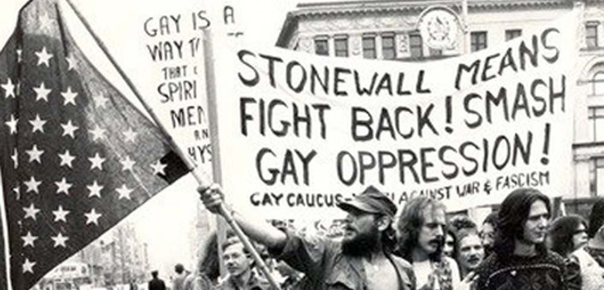
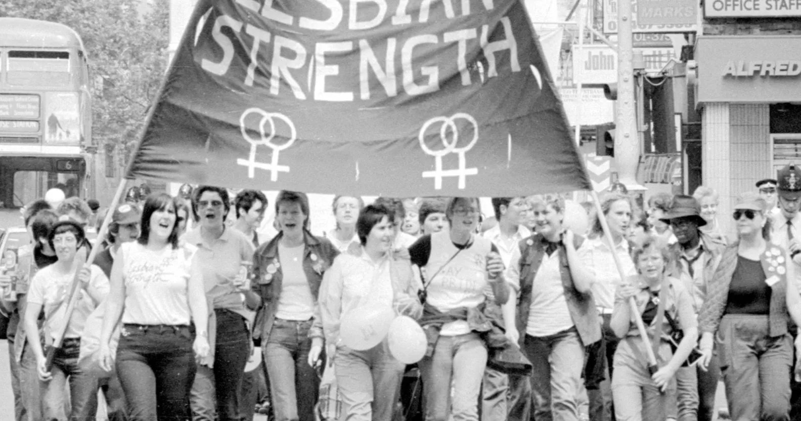
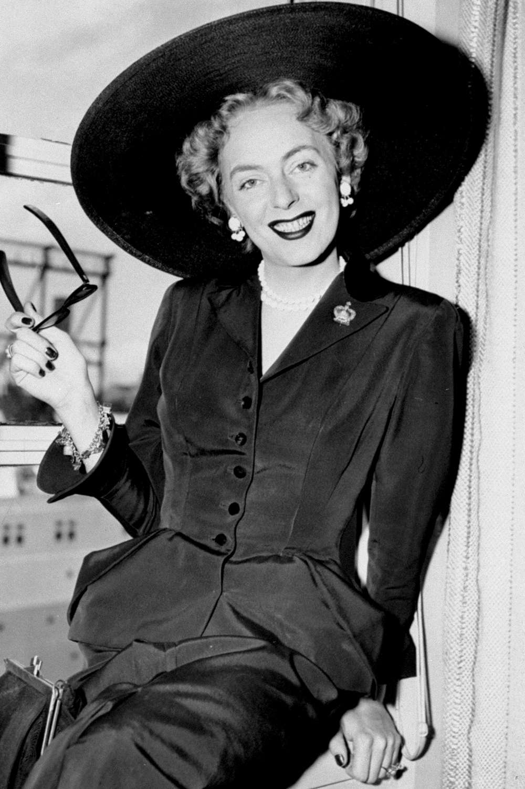

During the events of Stonewall on Christopher Street, New York City, people fought back a police raid for the first time. Lasting from June 28th until July 3rd, 1969, it marked a shift from simple endurance to active protests. Marsha P. Jonhson was an American black trans woman who helped lead the resistance. She was on the front lines of the revolts, and like a lot of people present there, thought she had nothing to lose. Along with her was Sylvia Rivera, a Puerto Rican trans woman who also fought alongside Marsha P. Jonhson. With this movement was born the modern activism that symbolised a major shift in LGBTQ+ community. Various organisations began to make surface following the gay rights movement. In 1980, the Human Rights Campaign (HRC) was born. It was founded by the gay rights activist Steve Endean and aimed to promote equality mostly for the LGBTQ+ community and other group of people. Their help has achieved the title of the biggest civil rights organization working to achieve LGBTQ+ equality in America to this day. The first pride parade took place on June 28th 1970, exactly one year after the Stonewall uprising.
Organised by activists including Brenda Howard (American bisexual rights activist), the marche
began in Greenwich Village, near the Stonewall Inn. Before, people feared arrests or losing
their jobs if they were identified. But after the success of the pride parade, other
cities like Los Angeles and Chicago decided to host their own pride parades that same year.
These marches became an annual celebration that is celebrated every year in June, also now called the Pride Month.
The first pride parade took place on June 28th 1970, exactly one year after the Stonewall uprising.
Organised by activists including Brenda Howard (American bisexual rights activist), the marche
began in Greenwich Village, near the Stonewall Inn. Before, people feared arrests or losing
their jobs if they were identified. But after the success of the pride parade, other
cities like Los Angeles and Chicago decided to host their own pride parades that same year.
These marches became an annual celebration that is celebrated every year in June, also now called the Pride Month.
Bisexual recognition also grew during this period. Activists Brenda Howard played a key role not only in organising Pride but also in promoting bisexual visibility within the movement. During the 1970s and 1980s, bisexual people often faced exclusion from both heterosexual and gay communities, but activism helped increase recognition. Over time, bisexuality became more openly discussed and accepted as part of the LGBTQ+ spectrum.
Along with that, activism had a direct impact on the medical reforms. Protests were made in the early 1970's targeting the American Psychiatric Association (APA), where they protested for the removal of homosexuality as a mental illness.

More on that, the AIDS epidemic was first identified in 1981 and was seen as only affecting gay men, leading to a lack of government care. Many hospitals refused treatment and that is why lesbian women stepped in to take care of them, insuring they were not left alone. In 1983, the group “San Diego Blood Sisters” organized blood drives after the government banned gay men from donating blood, even if blood transfusions were greatly needed during the pandemic. At the same time, lesbian activists challenged inequalities within the medical field. In 1990, members of ACT UP, including activists like Maxine Wolfe (author and activist), formed the Women's Caucus (group of women legislators or parliamentarians who collaborate across party lines to advance women's rights, gender equality, and shared policy goals) to protest the “Centers for Disease Control and Prevention” (CDC), whose definition of AIDS excluded many women which led to a high death rate among them. These efforts had a major impact on the LGBTQ+ community, who were often divided. Lesbian women created a stronger bond between the whole community. This act earned the L from “lesbian” the first letter of the acronym LGBT.
Reforms for the transgender group also became more visible after these movements. One key figure was Christine Jorgensen (1926-1989), who gained international attention in 1952 after undergoing gender-affirming surgery. Later, Marsha P. Johnson and Sylvia Rivera continued to fight for transgender rights. In 1970, they co-founded the Street Transvestite Action Revolutionaries (STAR), providing shelter and support. Over time, transgender visibility increased, although medical systems still controlled access to treatment for many years.